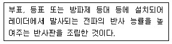
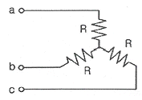
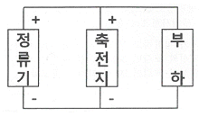
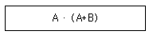
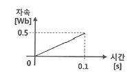

항로표지기사 (2018-08-19 기출문제)
1과목: 항로표지일반
1. 항로표지법령상 항로표지위탁관리업의 등록기준으로 맞지 않는 것은?
- 주된 영업소재지에 사무실을 소유하거나 임차할 것
- 연면적 20m2 이상의 충전실과 충전설비를 소유하거나 임차할 것
- 2톤 이상의 항로표지 점검·정비용 선박을 1척 이상 소유하거나 임차할 것
- 항로표지 위치측정을 위한 이동용 위성항법보정수신기 1대 이상을 소유할 것
(정답률: 61%)

2. 항로표지의 지리학적 광달거리를 결정하는 요소로 가장 거리가 먼 것은?
- 대기굴절
- 항해자의 안고
- 통항 선박의 길이
- 항로표지 등화의 높이
(정답률: 87%)
3. AIWR은 어떤 등질의 약기호인가?
- 호광
- 단명암광
- 등명암광
- 복합군명암광
(정답률: 81%)
4. 항로표지법령상 사설항로표지를 관리하면서 검사에 불합격한 등명기를 사용하는 것을 적발하였을 때의 과태료 부과 기준으로 맞는 것은? (단, 3회 이상 위반의 경우)
- 75만원
- 150만원
- 200만원
- 300만원
(정답률: 69%)
5. 등명기에 설치하여 규정된 등질의 부호와 전구의 직류전압과 전류를 제어하고, 동작중인 전구의 고장상태를 감시하여 전구교환기에 제어신호를 보내고, 일광감지기의 제어신호를 받아 전구를 점등시키는 장치는?
- 섬광기
- 회전장치
- 전구교환기
- 항로표지용 전구
(정답률: 79%)
6. IALA 해상부표식에 사용하는 항로표지에 대한 등광의 색을 바르게 연결한 것은?
- 측방표지 – 홍색등, 녹색등
- 방위표지 – 황색등, 홍색등
- 특수표지 – 흑색등, 백색등
- 고립장해표지 – 황색등, 녹색등
(정답률: 85%)
7. IALA 해상부표식(B지역) 좌현표지의 조건에 맞는 것으로 짝지어진 것은?
- 표체 : 홍색, 두표 : 홍색 원추형
- 표체 : 홍색, 두표 : 홍색 원통형
- 표체 : 녹색, 두표 : 녹색 원추형
- 표체 : 녹색, 두표 : 녹색 원통형
(정답률: 73%)
8. 항로표지 설계 시 고려해야 할 파압력 계산에 적용하는 조우의 정수면(정지하고 있는 수면)은?
- 평균수면
- 저조면평균
- 최고고조면
- 기본 수준면
(정답률: 78%)
9. 항해 관련 용어의 설명으로 맞는 것은?
- 변경은 두 지점의 경도가 같은 부호이면 합을 구하면 된다.
- 두 지점을 지나는 거등권 사이의 자오선의 호를 변경이라 한다.
- 두 지권 가운데 북쪽에 있는 것을 동지권, 남쪽에 있는 것을 하지권이라 한다.
- 적도에 평행한 소권을 위도권이라 하고, 각 위도권은 극에 가까워질수록 작아진다.
(정답률: 67%)
10. 항로표지의 기본 요건이 아닌 것은?
- 국제적으로 간편하고 누구나 식별하기 쉬울 것
- 대응성이 있어 수로도지의 참고나 계속 관측을 필요로 할 것
- 일정한 장소에서 항상 고정되어 있어야하며 정확히 운영될 것
- 신뢰도를 즉시 검사할 수 있어 그 결과의 확실성이 이용하는 측의 계측자의 능력이나 숙련도 및 선박의 기기 정도에 의존할 수 있을 것
(정답률: 80%)
11. 유인등대 건축물에 반드시 갖추어야 할 시설과 가장 거리가 먼 것은?
- 난방시설
- 소방시설
- 친수문화시설
- 위생 및 환경시설
(정답률: 80%)
12. 항로표지시설 관리지침상 등부표의 정비점건 주기에 대한 기준으로 맞는 것은?
- 1개월에 1회 이상
- 1개월에 2회 이상
- 2개월에 1회 이상
- 3개월에 1회 이상
(정답률: 77%)
13. 다음 중 군섬광으로서, 백색등이며 매 10초 2섬광 또는 매 5초 2섬광의 등질을 가진 항로표지는?
- 방위표지
- 측방표지
- 고립장해표지
- 안전수역표지
(정답률: 62%)
14. 암초나 수심이 얕은 곳 등에 설치하여 주변 선박에게 장해물 및 항로의 소재를 알리는 구조물로서 등광을 발하는 항로표지를 무엇이라고 하는가?
- 도표
- 등표
- 부표
- 입표
(정답률: 89%)
15. 항로표지시설 관리지침에서 정하는 항로표지에 과한 설명으로 틀린 것은?
- 광파표지는 일몰시에 점등하고 일출시에 소등한다.
- 전파표지는 농무 등 기상상태 악화 시 잠시 중단한 후 운영한다.
- 음파표지는 눈, 비, 안개 등으로 시정이 1.5해리 이하일 때 주·야간 취명한다.
- 성능이 극히 저하되어 안전상 위험이 있는 표지시설에 대하여 사용을 금지시켜야 한다.
(정답률: 90%)
16. 작도가 가장 간단하며 지표의 각 점의 위치는 각도와 거리에 의해서 기입하고 실제 지구표면에서의 그것과 아주 비슷한 관계를 갖도록 도시할 수 있기 때문에 항박도에 가장 많이 이용되는 도법은?
- 대권도법
- 점장도법
- 평면도법
- 다원추도법
(정답률: 58%)
17. 지구의 중심을 지나는 평면으로 구를 자른다고 가정할 때 지구표면에 생기게 되는 원을 무엇이라고 하는가?
- 대권
- 소권
- 지권
- 거등권
(정답률: 75%)
18. 다음 레이더 입표의 명칭은?

- 레이마크(Ramark)
- 레이더 응답용 표지(Racon)
- 레이더 반사기(Radar reflector)
- 레이마크 비콘(Ramark beacon)
(정답률: 89%)
19. 교차방위법으로 선위 결정 시 목표 선정에 관한 주의사항으로 틀린 것은?
- 위치가 정확하고 뚜렷한 목표를 선정한다.
- 위치선의 교각이 50° 미만인 목표는 피한다.
- 위치선의 교각이 90°에 가까운 목표를 선정한다.
- 방위를 측정하거나 방위선을 기점할 때 먼 목표보다는 가까운 것을 선정한다.
(정답률: 75%)
20. 항로표지법령상 항로표지용 장비나 용품에 대한 검사의 종류에 해당하는 것은?
- 변경검사
- 수시검사
- 임시검사
- 중간검사
(정답률: 63%)
2과목: 전기·전자기초
21. pn접합 실리콘 태양전지에 대한 설명 중 옳은 것은?
- pn 접합면에 빛을 쬐면 전자만이 발생한다.
- p 영역에 전자가 n 영역에 정공이 모인다.
- 가시광선에 의해서만 기전력을 얻을 수 있다.
- p형 부분에 양극(+), n형 부분에 음극(-)이 된다.
(정답률: 43%)
22. 저항 3개를 그림과 같이 연결하고, 평형 3상 교류 220V에 연결할 경우 각 상의 저항 R에 흐르는 전류는 약 몇 A인가? (단, R은 100Ω이라 가정한다.)

- 0.73
- 1.1
- 1.27
- 1.73
(정답률: 56%)
23. 축전지 설비의 한 블록도에 관한 설명 중 옳은 것은?

- 부동충전 방식이다.
- 축전지를 급속으로 충전할 때 사용한다.
- 정류기는 축전지에 충전하는 역할만 한다.
- 축전지의 전압이 정류기보다 높을 때
(정답률: 50%)
24. 디지털 계측기의 장점이 아닌 것은?
- 측정 오차가 적다.
- 온도의 영향을 받지 않는다.
- 측정값의 저항 및 연산이 용이하다.
- 측정값의 정확도를 유지할 수 있다.
(정답률: 65%)
25. 콘덴서의 용량을 크게 하는 방법으로 틀린 것은?
- 극판의 면적을 넓힌다.
- 극판의 간격을 좁게한다.
- 극판의 두께를 크게 한다.
- 극판값에 비유전율이 큰 절연물을 삽입한다.
(정답률: 55%)
26. 접지저항 측정 시 유의사항으로 틀린 것은?
- 보조 접지봉을 설치할 때 무리한 해머(hammer)질은 하지 않는다.
- 진동이 심한 곳, 고온 다습한 장소에서는 사용하지 않는다.
- 접지전압이 100V 이하가 되는가를 확인하고 측정한다.
- 장시간 사용하지 않을 때는 계기에 내장된 건전지를 빼서 보관한다.
(정답률: 64%)
27. 직류 발전기의 유도 기전력과 반비례 관계를 가지는 것은?
- 자속
- 병렬 회로 수
- 회전수
- 전기자 총 도체 수
(정답률: 57%)
28. 태양광전지 효율과 관계가 없는 것은?
- 태양복사 에너지
- 태양광전지의 면적
- 최대전력점의 전력(PMPP)
- 주변 온도
(정답률: 65%)
29. 직류발전기에 사용하는 브러시의 재질로 틀린 것은?
- 마름질
- 탄소질
- 흑연질
- 금속 흑연질
(정답률: 56%)
30. 분권 발전기를 정지시킨 후 계자 조정기의 계자 저항값 위치는 어떻게 설정해야 하는가?
- 0으로 둔다.
- 중간 위치에 둔다.
- 전압계의 측정 범위 확대
- 최소 위치로 둔다.
(정답률: 34%)
31. 디젤 발전기에서 기관의 속도를 일정하게 유지시키는 역할을 하는 장치는?
- 조속기
- 전동기
- VS
- AVR
(정답률: 63%)
32. 배율기 저항을 사용하는 주된 목적은?
- 용량계의 측정 범위 확대
- 저항계의 측정 범위 확대
- 전압계의 측정 범위 확대
- 검류계의 측정 범위 확대
(정답률: 73%)
33. 납축전지의 1 셀당 공칭전압은 몇 V인가?
- 1.2
- 1.5
- 1.8
- 2.0
(정답률: 60%)
34. 납축전지가 방전을 계속하게 되면 양극판은 어떤 색깔로 변하는가?
- 적갈색
- 회백색
- 녹색
- 황색
(정답률: 59%)
35. 가동코일형 계측기기에서 가동코일에 단락코일을 설치하는 이유는?
- 제동 토크 발생
- 주파수 보상
- 고주파 발생 억제
- 온도 보상
(정답률: 43%)
36. 다음 논리식을 간소화한 것은?

- A
- B
- A · B
- A+B
(정답률: 63%)
37. 권수가 100회인 코일에서 그림과 같이 자속이 변화될 때 발생되는 유도기전력은 몇 V인가?

- 50
- 250
- 500
- 1000
(정답률: 48%)
38. 2μF와 3μF를 병렬접속 했을 때 합성 정전용량은 몇 μF인가?
- 6
- 5
- 2.4
- 1.2
(정답률: 67%)
39. 50A의 전류가 흐르고 있는 도선에 0.2초 동안 0.03Wb의 자속을 끊었을 경우 일률은?
- 3.5
- 5.5
- 7.5
- 9.5
(정답률: 62%)
40. 대전체 근처에 대전되지 않은 도체를 가져오면 대전체에 가까운 쪽에 다른 종류의 전하가, 먼 쪽에 같은 종류의 전하가 나타나는 현상은?
- 전자분극현상
- 전기분해현상
- 자기유도현상
- 정전유도현상
(정답률: 59%)
3과목: 광파·음파표지
41. 두 개의 음이 동시에 발생할 때 한 음의 최저 가청한계가 다른 음 때문에 높아지는 현상은?(오류 신고가 접수된 문제입니다. 반드시 정답과 해설을 확인하시기 바랍니다.)
- 선스팩트럼 효과
- 복합음 효과
- 마스킹 효과
- 상음 음압 효과
(정답률: 48%)
42. 진동수가 1000Hz이고 속도가 340m/s인 소리의 파장(m)은?
- 0.34
- 0.64
- 1.36
- 2.14
(정답률: 69%)
43. 광학적 광달거리를 계산할 때 IALA에서 권고하는 표준시정 10해리의 대기투과율은 약 얼마인가?
- 0.44
- 0.74
- 1.5
- 1.95
(정답률: 63%)
44. 교량등에 대한 설명으로 틀린 것은?
- 좌측단등의 등색은 녹색광이다.
- 우측단등의 등색은 홍색광이다.
- 중앙등은 가항수역이나 항로의 중앙을 표시하는 등화이다.
- 교각을 표시하는 등화는 백색광이다.
(정답률: 59%)
45. 색수차가 발생하는 원인은 빛의 어떤 성질 때문인가?
- 분산
- 반사
- 간섭
- 편광
(정답률: 65%)
46. 산 엄어 소리가 들려오는 것은 주로 음파의 어떤 성질 때문인가?
- 반사
- 굴절
- 회절
- 간섭
(정답률: 56%)
47. 광달거리에 대한 설명으로 틀린 것은?
- 등화가 도달하는 최대거리이다.
- 빛의 산란, 흡수 또는 지구의 만곡 등의 이유 때문에 거리 오차가 있을 수 있다.
- 광달거리에는 지리학적, 광학적, 명목적 광달거리가 있다.
- 항해자가 등광을 인식할 수 있는 최소거리를 뜻한다.
(정답률: 59%)
48. 1kHz의 65dB는 몇 phon인가?
- 65
- 74
- 80
- 85
(정답률: 59%)
49. 교량표지 설치 시 통항 최적지점 결정요소에 해당하지 않는 것은?
- 교량 아래 통항 선박의 최대 높이
- 유속의 강·약
- 교각 및 다른 장해물 보호
- 일방향 또는 양방향 통항의 필요성
(정답률: 56%)
50. 파장이 500nm인 빛이 굴절률 1.5인 유리 속을 진행할 때 이 유리 속에서 빛의 속도(m/s)는? (단, 진공 내에서 빛의 속도는 3×108m/s이다.)
- 2×108
- 4×108
- 5×108
- 6×108
(정답률: 53%)
51. 등대를 설계함에 있어서 하중 및 외력의 조합에 대한 설명으로 틀린 것은?
- 파도의 영향을 받지 않는 경우 자중+풍압력, 자중+진지력 중 큰 힘을 택한다.
- 보통의 경우에는 지진력이 풍압력보다 크므로 지진력으로 검토한다.
- 파도의 영향을 받을 경우 자중+진지력, 자중+파압력+풍압력+부력 중 큰 힘을 택한다.
- 기초저면이 기본수준면보다 위에 있을 때에는 부력을 고려하지 않는다.
(정답률: 67%)
52. 광파표지의 등질에 해당되지 않는 것은?
- 도등
- 명암등
- 섬광등
- 부동등
(정답률: 67%)
53. 수심 45m, 6knot의 강조류인 통항로가 있다. 설치하기에 적절한 표준형 등부표는?
- LL-30
- LL-26
- LL-24
- LL-26(M)
(정답률: 50%)
54. 에너지의 양자화 개념을 도입하려 흑체의 표면에서 복사되는 분광복사발산도를 파장과 온도와의 관계로 표시한 이론은?
- 빈의 복사법칙
- 스테판-볼쯔만의 법칙
- 빈의 변위법칙
- 프랑크의 복사법칙
(정답률: 70%)
55. IALA에서 권고하는 실효광도의 산출 방식이 아닌 것은?
- 슈미트-크라우센 방식
- 돌보트 방식
- 알라드 방식
- 브론델·레이·더글러스 방식
(정답률: 46%)
56. 광학적 광달거리에 관여하는 요인이 아닌 것은?
- 표지등화의 광도
- 대기의 혼탁정도
- 표지의 배경의 조건
- 지구의 곡률
(정답률: 59%)
57. “빛은 최소한의 걸리는 경로를 따라 진행한다.”와 관련된 광학 이론은?
- 호이겐스의 원리
- 페르마 원리
- 푸리에 원리
- 파스발 에너지 원리
(정답률: 58%)
58. 도등의 설치 목적으로 거리가 먼 것은?
- 분명하지 않은 가항수로의 표시
- 고정 또는 부유 항로표지가 항해에 이용할 수 없거나 만족하지 않은 가항수역의 표시
- 수로의 가장 얕은 곳의 수심표시
- 양방향 통항로의 분기점 표시
(정답률: 63%)
59. 음파표지의 설계 기초가 아닌 것은?
- 이용범위에 대하여 충분한 음향이 되도록 강력한 무신호를 설치할 것
- 음파표지의 이용방법이 간단하고 편리할 것
- 기상, 해상의 영향에 의하여 음향이 감쇄되지 않고 전륜 방위의 변화가 적도록 설치 위치를 선정할 것
- 부근의 지형에 의하여 음향이 반사 또는 굴절되도록 설치 위치를 선정할 것
(정답률: 57%)
60. 등대 또는 등표 설계 시 지진력(t)을 구하는 방법은?
- 등탑자중 × 수평진도
- 등탑자중 × 풍압력
- 등탑자중 × 지반별계수
- 풍압력 × 높이계수
(정답률: 59%)
4과목: 전파표지 및 시스템이용
61. 맥스웰 방정식에 의한 전파의 성질이 아닌 것은?
- 전파는 균일한 매질내에서는 일정한 속도로 직진한다.
- 전파는 진행중 매질에 따라 주파수가 변한다.
- 전파는 서로 다른 매질의 경계면에서 일부가 반사되고, 투과한 전파는 굴절한다.
- 전파가 파원에서 멀어짐에 따라 진폭은 점차로 감소된다.
(정답률: 59%)
62. 중파대에 주로 사용되고 있는 λ/4 수직접지 안테나의 방사효율(η)은?
- 20%
- 25%
- 75%
- 80%
(정답률: 58%)
63. 특수신호표지에 속하지 않는 것은?(문제 오류로 가답안 발표시 4번으로 발표되었지만 확정답안 발표시 2, 4번이 정답처리 되었습니다. 여기서는 가답안인 4번을 누르면 정답 처리 됩니다.)
- 조류신호표지
- 선박통항신호표지
- 해양기상신호표지
- 전파신호표지
(정답률: 56%)
64. Loran-C 체인 통제정수 및 허용치에 대한 설명으로 거리가 먼 것은?
- TD가 표준치와의 1시간 평균편차가 ±150ns 이내일 것
- ECD가 표준치와 평균 ECD의 편차가 ±1.5us 이내일 것
- 최저 첨두 출력은 표준치의 30% 이상일 것
- 표준치와 전계강도의 편차가 -3dB 이상일 것
(정답률: 50%)
65. 전파 경로를 달리하는 전파간의 간섭 또는 전파 경로의 상태 변화에 의하여 수신 전계강도가 시간적으로 변화하는 현상은?
- Fading
- magnetic storm
- Dellinger
- Radio echo
(정답률: 56%)
66. 선박통항신호소(VTS)에서 제공하는 정보제공서비스의 내용으로 거리가 먼 것은?
- 수로지상의 변경사항
- 항로표지의 이동사항
- 부유물이 발견사항
- 항만항로상의 어업사항
(정답률: 67%)
67. Loran-C에서 기선사용의 불가능으로 블링크(Blink)하는 이유가 아닌 것은?
- 종국이 운영 중지중일 때
- TD가 허용치를 넘었을 때
- 부유물의 발견사항
- 위상코드가 부적절 할 때
(정답률: 23%)
68. 조류신호소의 업무로 거리가 먼 것은?
- 조류의 방향 표시
- 조류 속도 표시
- 조류량 표시
- 조류 예측에 대한 정보표시
(정답률: 65%)
69. 중파 방송국의 안테나 전력을 50kw에서 150kw로 증가하면 동일 지점의 전계 강도는 약 몇 배로 되는가?
- 1.7배
- 2.8배
- 3.2배
- 5배
(정답률: 42%)
70. 레이더의 성능으로 나타내는 요소가 아닌 것은?
- 최대 탐지 거리
- 거리분해능
- 방위 분해능
- 오차 분해능
(정답률: 62%)
71. Loran-C의 주국에서 발사하는 펄스군 중 9번 째 펄스에 대한 설명으로 맞는 것은?
- 주파수 차 계산
- 발신국 원근 식별
- 사용하는 국의 적합성 판별
- 주국 신호의 식별
(정답률: 56%)
72. 진공 중에서 파장이 100m인 선로이 주파수는?
- 100kHz
- 300kHz
- 3MHz
- 30MHz
(정답률: 25%)
73. 사용 파장을 λ(m)라 할 때 반파장 다이폴 안테나의 실효 길이(m)는?
- λ/π
- 2λ/π
- λ/2π
- 3λ/2π
(정답률: 39%)
74. 해상용 DGPS에서 기지의 육상 고정점에서 수신 가능한 GPS 위성을 포착하여 방송하는 항법메세지 등 C/A 코드를 수신하여 각 위성의 의사거리를 계산하는 곳은?
- 제어국
- 감시국
- 위성국
- 기준국
(정답률: 67%)
75. Loran-C의 군반복주기(GRI)를 선정 시 가장 짧은 반복주기를 결정하는 데 고려해야 할 사항이 아닌 것은?
- 펄스 간격
- 수신기 회복시간
- 수신안테나의 성능
- 각 종국간의 거리
(정답률: 30%)
76. 인공위성 또는 우주 비행체과 같이 매우 빠른 속도로 이동하고 있는 물체에서 전파를 발사 할 때 수신주파수가 변화하는 현상을 무엇이라 하는가?
- 에코 현상
- 페이딩 현상
- 도플러 시프트
- 페러데이 회전
(정답률: 59%)
77. 송신안테나이 높이가 50m이고, 수신안테나의 높이가 40m일 때 초단파대의 직접파 최대 가시거리는 약 몇 km인가?
- 55.1
- 65.8
- 75.2
- 45.7
(정답률: 32%)
78. GPS의 측위 오차 중 구조적 오차에 해당되지 않는 것은?
- 위성시계 오차
- 전리층 오차
- 대류층 오차
- 기하하적 오차
(정답률: 59%)
79. 지표파의 전파 성질에 대한 설명으로 틀린 것은?
- 지표의 유전율이 클수록 감쇠를 적게 받는다.
- 지표의 도전율이 클수록 감쇠를 적게 받는다.
- 주파수가 낮을수록 전파를 적게 받는다.
- 수평편파보다는 수직편파 쪽이 감쇠가 적다.
(정답률: 57%)
80. 미국 연방항공청(FAA)의 최고의 전략적 시스템으로 지구 정지궤도위성에서 GPS의 L1주파수와 같은 대역으로 GPS 오차 정보를 송출하는 시스템은?
- VTS
- WAAS
- LASS
- CORS
(정답률: 67%)